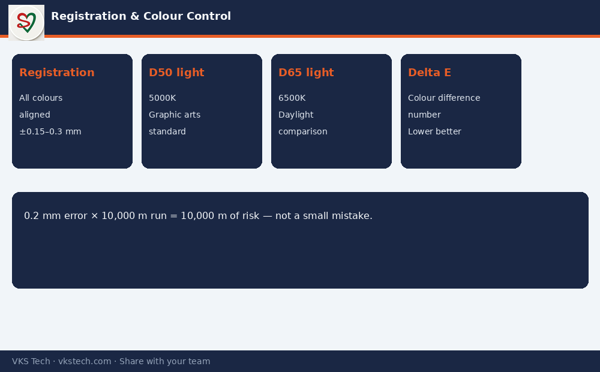

🎯 0.2 mm Registration Error Looks Small on the Machine. On the Customer’s Shelf It Becomes a Rejection.
📖 11-min read · Printing quality · PPC + Quality + Operators
Registration and colour consistency are two of the most expensive silent problems in converting. A small drift during a long run can produce thousands of metres of material that looks “almost OK” on the press but fails the brand’s standard. This article explains what to control and how to talk about it clearly on the floor.
- Registration: All colours must land in the same place relative to each other
- Typical tolerance: often ±0.15–0.3 mm depending on job and brand
- Colour check light: D50 (5000K) for graphic arts; D65 (6500K) for daylight comparison
- Delta E: Numerical colour difference — lower is better (many specs want < 2 or < 3)
1. What Registration Really Means
In multi-colour printing, each colour is printed at a different station. If station 2 is even slightly ahead or behind station 1, the image looks blurred, double-edged or misaligned. That is registration error.
Causes on the floor: web tension changes, plate/cylinder mounting error, worn gears, incorrect compensation, temperature drift, and sometimes operator over-adjustment.

2. Colour Consistency — Beyond “Looks OK”
Human eyes are inconsistent under different lights. That is why plants use standard viewing conditions:
- D50 (5000K) — standard for graphic arts and print evaluation
- D65 (6500K) — closer to average daylight; used for some product comparisons
Spectrophotometers give a number (Delta E). Relying only on “eye match under shop light” is one of the fastest ways to create customer disputes.
3. What PPC and Supervisors Should Insist On
- First-piece approval under correct light (D50/D65 as per customer)
- Registration check at start and after every major stop
- Ink viscosity and anilox/cylinder condition logged for colour-critical jobs
- Clear reject criteria so operators do not “hope it will pass”
Next → Solvent-based vs Solvent-less Lamination
🎯 0.2 mm रजिस्ट्रेशन एरर मशीन पर छोटा लगता है। कस्टमर की शेल्फ पर यह रिजेक्शन बन जाता है।
📖 11-मिनट पढ़ें · प्रिंटिंग क्वालिटी · PPC + क्वालिटी + ऑपरेटर
रजिस्ट्रेशन और रंग स्थिरता कन्वर्टिंग में सबसे महंगी चुप समस्याओं में से हैं। लंबी रन में छोटी ड्रिफ्ट हजारों मीटर मटेरियल बना सकती है जो प्रेस पर “लगभग ठीक” दिखे लेकिन ब्रांड स्टैंडर्ड में फेल हो।
- रजिस्ट्रेशन: सभी रंग एक-दूसरे के सापेक्ष सही जगह पर
- Typical टॉलरेंस: अक्सर ±0.15–0.3 mm
- लाइट: D50 (ग्राफिक आर्ट्स), D65 (डेलाइट)
- Delta E: रंग अंतर का नंबर — कम बेहतर
अगला → सॉल्वेंट vs सॉल्वेंट-लेस लैमिनेशन